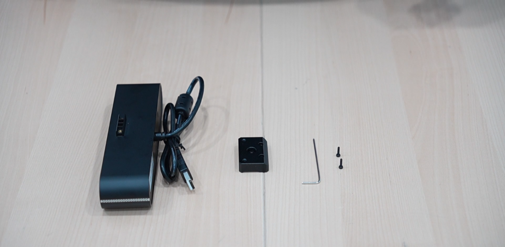
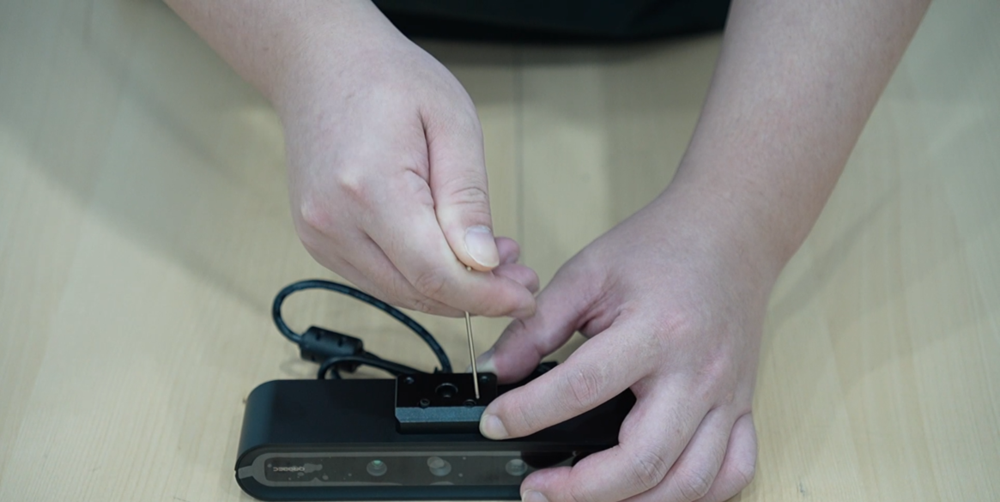
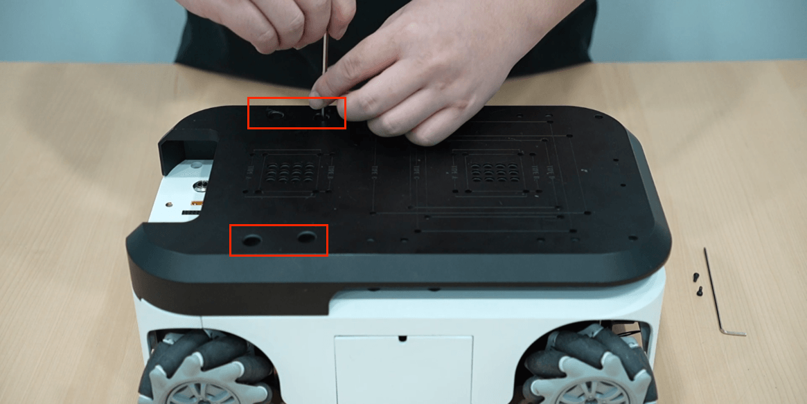
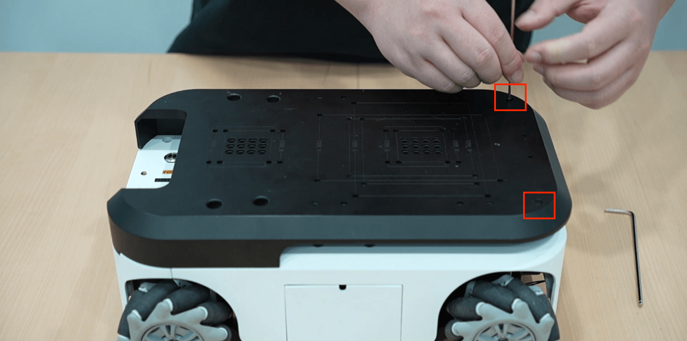
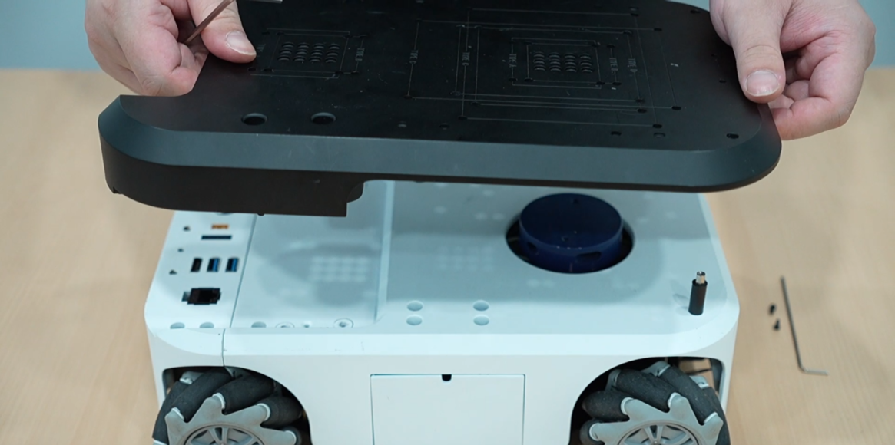
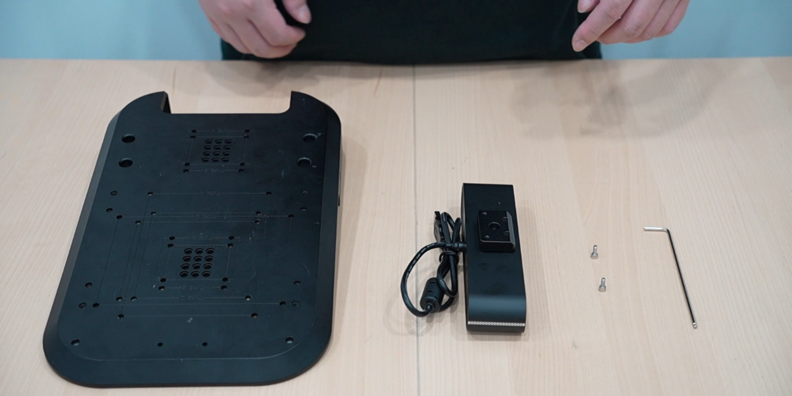

Depth Camera
Compatible Model： myAGV Plus,myAGV Jetson Nano 2023
The Astra Pro 2 depth camera is currently only used on the myAGV JN version and the myAGV Plus version. Additionally, the Astra Pro 2 depth camera is an optional product and needs to be purchased separately.
The Astra Pro 2 depth camera uses 3D structured light imaging technology to capture depth images of objects, while also utilizing a color camera to capture color images of objects. The Astra Pro 2 is suitable for 3D scanning of objects and spaces within a distance range of 0.6m to 6m, enabling depth data measurement of objects within this range.
Astra Pro 2 Basic Specifications
| Parameter | Specification |
|---|---|
| Name | Astra Pro 2 |
| Model | A20113-000 |
| Working Range | 0.6m - 6m |
| Dimensions | 164.85 × 36.00 × 40 mm |
| Weight | 145g ± 5g |
| Power Consumption | Average < 2.0W, Peak < 2.5W |
| Baseline | 55mm |
| Interface | USB Type A Male |
| Power Supply | USB 2.0 |
| Power Requirement | 5V 0.5A |
| Operating Temperature | 10°C - 40°C |
| Measurement Accuracy | 3mm @ 1m |
Astra Pro 2 Depth Image Specifications
| Parameter | Specification | Remarks |
|---|---|---|
| Resolution<br/>@Frame Rate | 1280x1024 @ 7fps 1280x960 @ 7fps 640x480 @ 10/15/30fps 320x240 @ 10/15/30fps 160x120 @ 10/15/30fps |
|
| Depth FOV | H58.4° V45.5° D70° ± 5° | Measured at 1m |
| Depth Format | Y16/Y12/Y11 | Depth unit: 0.1mm, 1mm |
Astra Pro 2 Color Image Specifications
| Parameter | Specification |
|---|---|
| Resolution<br/>@Frame Rate | 1280x960 @ 7fps 640x480 @ 10/15/30fps 320x240 @ 10/15/30fps |
| Color FOV | H62.7° V49° D75.1° ± 5° |
| Image Format | UYVY |
Astra Pro 2 Specifications
| Parameter | Specification |
|---|---|
| Operating System | Windows / Linux |
| Application Environment | Indoor |
| Safety | Class 1 Laser |
| Camera Principle | Monocular Structured Light |
| Certification | RoHS 2.0 / REACH / Class 1 |
Installation Guide
1.Take out the Astra Pro 2 depth camera and the installation components.

2.Use two M2*4 screws to secure the connector to the depth camera.

3.Use an Allen wrench to remove the four M4*8 screws.

4.Use the Allen wrench to remove the two M2.5*2 screws.

5.Flip the casing over and align the screw holes with the camera.


6.Install the camera by tightening the M4*4 screws.
7.Connect the camera's USB cable to the USB port on the myAGV.
User Guide
The Astra Pro 2 depth camera is primarily developed using ROS2.
roslaunch orbbec_camera astra_pro2.launch
The available ROS topics that users can subscribe to are:
/camera/color/camera_info: The color camera info./camera/color/image_raw: The color stream image./camera/depth/camera_info: The depth camera info./camera/depth/image_raw: The depth stream image./camera/depth/points: The point cloud, only available whenenable_point_cloudistrue./camera/depth_registered/points: The colored point cloud, only available whenenable_colored_point_cloudistrue./camera/left_ir/camera_info: The left IR camera info./camera/left_ir/image_raw: The left IR stream image./camera/right_ir/camera_info: The right IR camera info./camera/right_ir/image_raw: The right IR stream image./diagnostics: The diagnostic information of the camera, Currently, the diagnostic information only includes the temperature of the camera.
For more details, refer to myAGV-rtabmap Mapping Guide